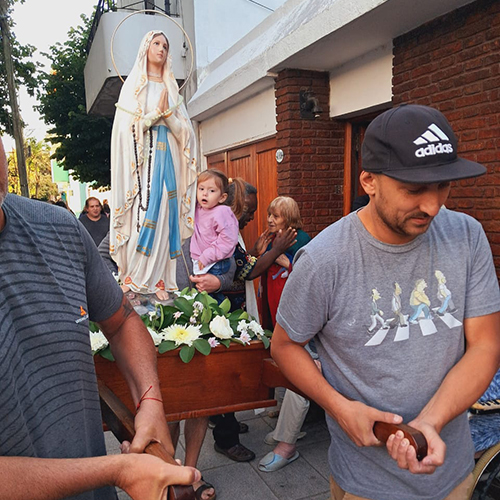

NTRA. SRA. DE LOURDES. FIESTA PATRONAL MARÍA DE LOURDES: “FORTALECE NUESTRA ESPERANZA”
PARROQUIA Y SANTUARIO
NTRA. SRA. DE LOURDES. FIESTA PATRONAL MARÍA DE LOURDES “FORTALECE NUESTRA ESPERANZA”
DEL 2 HASTA EL 11 DE FEBRERO
FIESTA PATRONAL 2025
DESDE EL 2 AL 10 DE FEBRERO
Celebración:Novena de Lourdes
Hora inicio: 18.00 hs.
DÍA LUNES 10 DE FEBRERO
Celebración: Homenaje a la virgen
Hora inicio: 21.00 hs.
Lugar: Gruta de Lourdes
Celebración: Misa de apertura
Hora inicio: 23.00 hs.
Lugar: Gruta de Lourdes
DÍA MARTES 11 DE FEBRERO
Celebración: Misa
Hora inicio: 07.00 hs.
Lugar: Templo Inferior
Celebración: Misa
Hora inicio: 08.00 hs.
Lugar: Templo Superior
Celebración: Misa
Hora inicio: 09.00 hs.
Lugar: Templo Inferior
Celebración: Misa
Hora inicio: 09.00 hs.
Lugar: Gruta de Lourdes
Celebración: Misa
Hora inicio: 10.00 hs.
Lugar: Templo Superior
Celebración: Misa y Bendición Niños (procesión calles)
Hora inicio: 11.00 hs.
Lugar: Gruta de Lourdes
Celebración: Misa
Hora inicio: 12.00 hs.
Lugar: Templo Inferior
Celebración: Misa
Hora inicio: 13.00 hs.
Lugar: Templo Superior
Celebración: Misa
Hora inicio: 14.00 hs.
Lugar: Gruta de Lourdes
Celebración: Misa por las mujeres embarazadas y las que buscan ser madres
Hora inicio: 15.00 hs.
Lugar: Templo Inferior
Celebración: Rosario de globos elevados al cielo
Hora inicio: 15.45 hs.
Celebración: Misa por los trabajadores y desocupados
Hora inicio: 16.00 hs.
Lugar: Templo Superior
Celebración: Bendición de los enfermos
Hora inicio: 16.00 hs.
Lugar: Gruta de Lourdes
Celebración: Misa Asuncionista
Hora inicio: 17.00 hs.
Celebración: Misa: Se reza por el respeto a la mujer y contra la violencia de género
Hora inicio: 18.00 hs.
Lugar: Templo Superior
Celebración: Misa
Hora inicio: 18.00 hs.
Lugar: Gruta de Lourdes
Celebración: Bendición de los enfermos
Hora inicio: 19.00 hs.
Lugar: Gruta de Lourdes
Celebración: Solemne Concelebración en honor a la patrona de la Diócesis de San Martín
Hora inicio: 19.00 hs.
Lugar: Templo Inferior
Celebración: Misa: Se reza por las víctimas de la inseguridad
Hora inicio: 20.00 hs.
Lugar: Templo Superior
Celebración: Procesión
Hora inicio: 21.15 hs.
Lugar: Calles
Celebración: Misa de Clausura
Hora inicio: 22.30 hs.
Lugar: Gruta de Lourdes
CONFESIONES Y BENDICIONES EN LUGARES DESTINADOS
SANTOS DEL MES
1 FEBRERO SANTA BRÍGIDA DE IRLANDA
En Kildare, en Irlanda, santa Brígida, abadesa, que fundó uno de los primeros monasterios de
la isla y continuó el trabajo de evangelización...
2 FEBRERO NUESTRA SEÑORA DE LA PURIFICACIÓN
La Presentación del Señor, Nuestra Señora de la Purificación o Nuestra Señora de la Candelaria:
"Cumpliendo lo mandado...
3 FEBRERO SAN BLAS
San Blas, obispo y mártir, que, por ser cristiano, padeció en tiempo del emperador Licinio en
la ciudad de Sebaste, en Armenia...
4 FEBRERO SANTA JUANA DE VALOIS
En Bourges, de Aquitania, santa Juana de Valois, que siendo reina de Francia, al ser declarado
nulo su matrimonio con...
5 FEBRERO SAN FELIPE DE JESÚS
En Nagasaki, en Japón, pasión de los santos Pablo Miki y compañeros, Declarada una persecución
contra los cristianos...
6 FEBRERO SAN PABLO MIKI Y COMPAÑEROS
En Nagasaki, en Japón, pasión de los santos Pablo Miki junto con veinticinco compañeros,
Declarada una persecución contra...
MURO INFORMATIVO
CONSULTORÍA FAMILIAR
Si estás pasando por una situación dificil en lo personal, familiar o a nivel de pareja, hay un grupo de ORIENTADORES
FAMILIARES dispuestos a escucharte
CHARLAS PREMATRIMONIALES Requisito del sacramento
Días: El primer lunes y miercoles de cada mes excepto los meses de Enero, febrero y julio.
Hora de inicio: 20.00 hs.
5 DE MAYO 2025 PEREGRINACIÓN A LOURDES, FRANCIA
Peregrinamos a Lourdes en Francia, para Visitar a la Virgen.
Día: fecha de salidad 5 de mayo del 2025
1 DE DICIEMBRE CONCIERTO DE CORO - EMMU
Día: El domingo 1 de diciembre
Hora inicio: 15.00 hs.
8 DE DICIEMBRE CONCIERTO DE VILLANCICOS
Día: El domingo 8 de diciembre
Hora inicio: 16.00 hs.
8 DE DICIEMBRE PROCESIÓN
Día: El domingo 8 de diciembre
Hora inicio: Después de misa de 17.30 hs.
15 DE DICIEMBRE CONCIERTO DE CORO - CÁMARA M3F
Día: El domingo 15 de diciembre
Hora inicio: 15.00 hs.
22 DE DICIEMBRE CANTATA NAVIDEÑA
Día: El domingo 22 de diciembre
Hora inicio: 15.00 hs.

INMACULADA CONCEPCIÓN DE LA VIRGEN
8 de diciembre 2024 Procesión por las calles de Santos Lugares y bendición de adultos mayores
En los momentos de dificultad, encuentra consuelo en la gracia
divina que fluye en la fiesta del encuentro con Dios, donde cada
oración es un puente hacia su presencia, donde cada oración es un
puente hacia su presencia.
"Quien recibe la coronilla de la Divina Misericordia recibirá Gran
Misericordia en la hora de la muerte. Incluso si hubiera un
pecador mas endurecido, si recitara esta coronilla una sola vez,
recibirá la gracia de Mí infinita misecordia (...)(Diario de Santa
Faustina, 687)
A Santa Brigida le fue revelada la promesa de la Santísima Virgen
María de conceder las siete gracias a todo aquel que la honre y
acompañe diariamente rezando y mediando los siete dolores que
padeció nuestra madre
Sigue de cerca las actividades y eventos especiales de la Iglesia
de Lourdes con "Auras de Lourdes", nuestra revista digital
actualizada trimestralmente
Maria nos acoge en su amor materno a través del Santo Rosario. En
él encuentras una poderosa arma espiritual que fortalece el
espíritu y colma tu alma con el amor de Dios